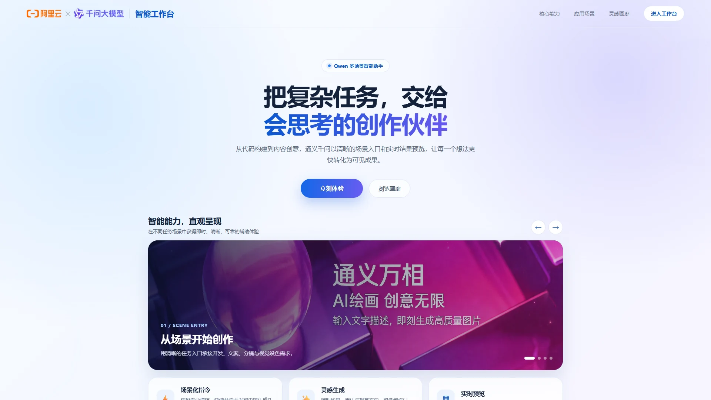
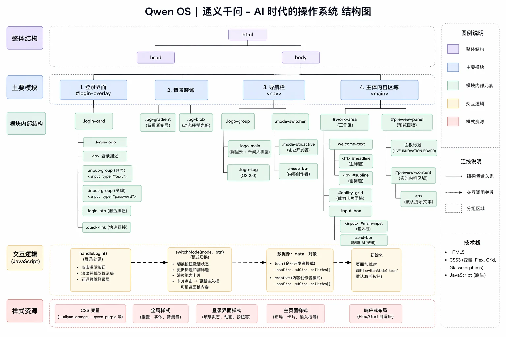
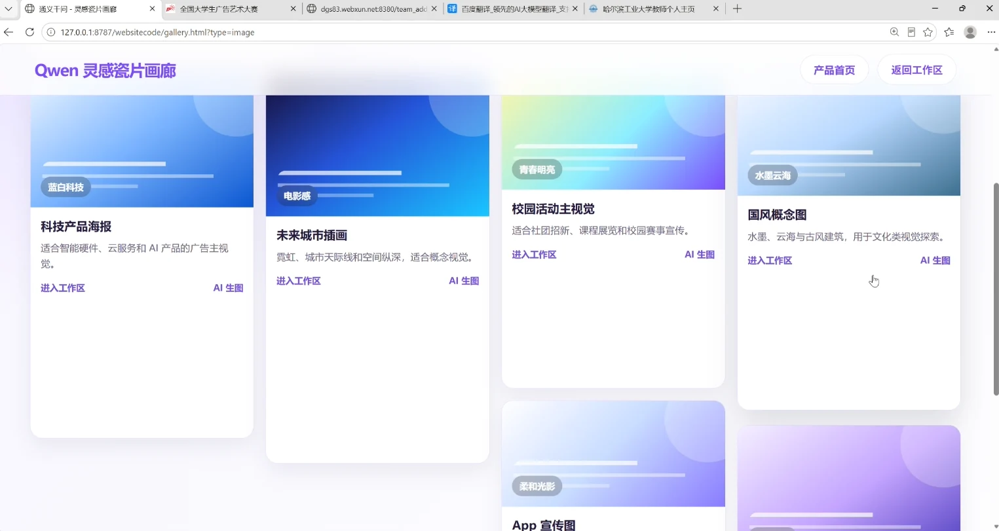
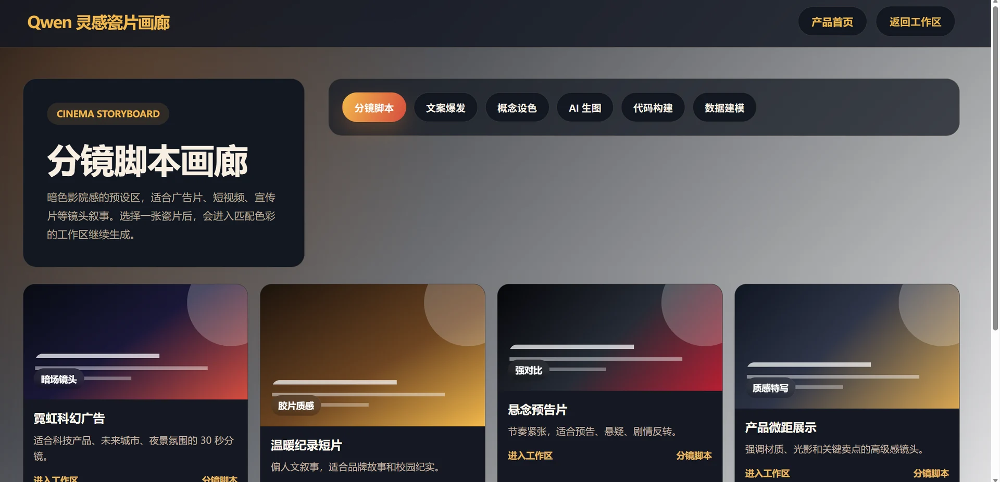
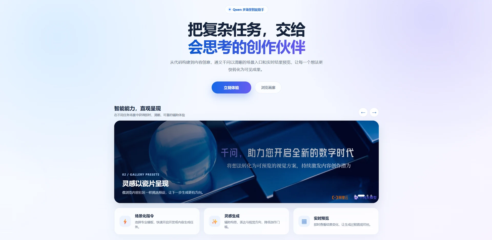
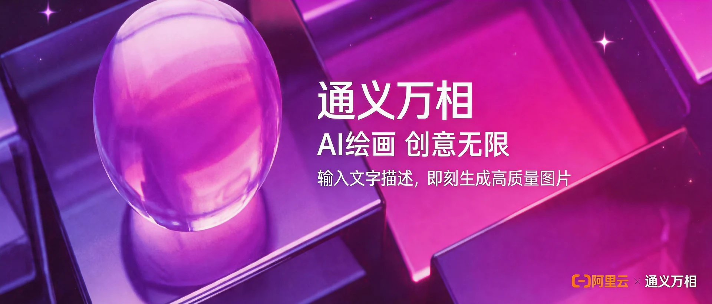
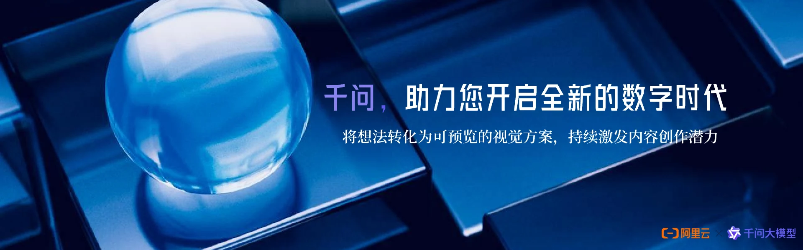

Qwen AI Workspace
UI / AI Creative Workspace · 2026

Overview
Qwen AI Workspace is a design exploration of a creative workspace built around Alibaba Cloud’s Tongyi capabilities. It organises conversation, image generation and galleries for content creators, moving from information architecture and layouts to a web prototype and API integration.
Organise the interface around creative tasks
The structure includes product information, creative entry points, conversation and a gallery. Task cards and functional groups help users identify available capabilities before entering a specific workspace, while the gallery supports browsing and revisiting work.
Visual explorations include a dark workspace, a light task interface and blue-purple brand presentations. The images below document different pages and stages of the design.
My contribution: connect interface and function
I planned the UI and implemented the prototype. Using Figma, I designed screens and interaction flows, organised the functional hierarchy and page transitions, then built a JavaScript and Python web prototype with Tongyi API integration. Login, welcome, product introduction, inspiration gallery and main workspace pages supported testing the path from a request to a returned result.
The project is presented as a design and functional prototype, with an emphasis on organising creative workflows and integrating APIs.
Gallery
Select an image to enlarge it. Use the left and right arrow keys to browse.






